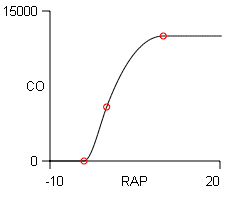

Here is a list of the CO-And-VR model's variables. Note that the model is not solved as a function of time. It has no differential equations.
Cardiac Output (CO) is the rate of blood flow from the heart to the periphery. Units are mL/Min.
Venous Return (VR) is the rate of blood flow from the periphery back to the heart. Units are mL/Min.
Right Atrial Pressure (RAP) is the blood pressure in the right atrium. Units are mmHg. This is a key variable in that it influences both cardiac output and venous return.
Mean Circulatory Filling Pressure (MCFP) is a virtual pressure that pushes blood from the periphery back to the heart. Think of it as a functional venous pressure. Units are mmHg.
Resistance To Venous Return (RVR) is a virtual hemodynamic resistance that opposes the flow of blood back to the heart. It is roughly equivalent to venous resistance. Units are mmHg/(mL/Min).
Heart Strength (HS) is a parameter that moves the plateau of the Starling curve up and down. Units are x Normal.

And we have one curvilinear function called Starling Curve
which relates cardiac output (CO) to right atrial pressure
(RAP).
The curve's data points are shown as red circles above and are tabulated below.
| X | Y | Slope |
| -4 | 0 | 0 |
| 0 | 5400 | 1500 |
| 10 | 12500 | 0 |